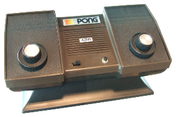
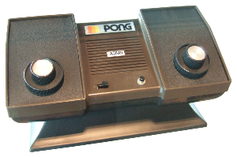

Consol'Story
Bonjour et bienvenue sur ce site dédié à l'histoire de la console de salon. Nous allons ensemble visiter ce monde créateur de virtualité de la première
génération jusqu'aux toutes dernières PlayStation 5 et Xbox Series.
Vous aurez un article concis avec des informations qui me semblent importantes, des photos et un lien vers des émissions qui me paraissent bien illustrer la
console présentée... quoique certaines consoles n'intéressent pas grand-monde et on se retrouve avec un sujet traité plus ou moins bien traité.... De plus,
certaines vidéos seront en anglais faute d'une documentation française satisfaisante et suffisante.
Documentation vidéo
La documentation vidéo est essentiellement lié à YouTube car ce média permet de trouver de nombreuses chaines de professionnels ou de passionnés du jeu vidéo et de leurs supports. N'hésitez pas à me remonter les éventuels liens qui ne fonctionnent plus, ça peut arriver !
Pourquoi le choix unique du Japon, de l'Amérique et de l'Europe
C'est un choix correspondant aux cibles privilégiés des entreprises, c'est-à-dire les lieux où il y a le plus de chances de ramasser des profits.
Historiquement, le Japon est LE pays du jeu vidéo, du manga... et qui a toujours une longueur technologique d'avance sur le reste du monde - même
aujourd'hui Microsoft ne comprend toujours pas pourquoi la Playstation 5, bien moins puissante sur le papier que la Xbox Series, soit plus performante sur
le terrain ! -. Mais les Etats-Unis, quand il s'agit de faire du blé, n'est jamais en reste. D'ailleurs aujourd'hui, les deux seules grandes marques qui
dominent le marché sont japonaise et américaine. Il est à regretter une fois de plus que la France et l'Europe, avec tous les talents potentiels de ces
pays, n'est jamais été capable de créer une console mondialement incontournable. Heureusement qu'Ubisoft sauve l'honneur !
Néanmoins, il y a un fait historique que je me dois de mentionner étant donné que l'on a célébré la mort il y a peu en le glorifiant alors qu'il est à
l'origine de nombreux problèmes actuels dans notre pays, je parle bien sûr de Giscard. 1972, les plus grosses industries informatiques de l'Europe
(Philips, Honeywell...) décident ensemble de former une alliance pour devenir une plateforme mondiale de l'informatique. Si cela avait été mené à
terme, on ne se serait pas retrouvé aujourd'hui avec nos données personnelles traitées par Microsoft mais Giscard décida unilatéralement de stopper tout
cela en 1975. J'enfonce le clou en vous ravivant la mémoire, c'est également cette année-là qu'il promulgue la loi Giscard/Rotschild cessant les prêts
d'état à 0% auprès de la banque centrale et obligeant l'état à passer par des banques privées, s'endettant de fait par des prêts toxiques. Résultat
aujourd'hui, nous nous retrouvons avec une dette qui reste constante au fil des années mais des intérêts à rembourser qui se sont envolés pour nous mettre
dans la panade.
Le Krach du jeu vidéo en 1983
Le krach du jeu vidéo, ce qu'on appelle le choc Atari car c'est bien le responsable de tout ce merdier qui faillit voir disparaître ce pan
économique du loisir, est une récession à grande échelle dans l’industrie du jeu vidéo qui s’est produite de 1983 à 1985 principalement aux États-Unis
- On remarque que les séismes économiques viennent tout le temps de chez eux, mais bon ! Continuons à en dépendre ! -. Le krach s'est produit à
la suite de plusieurs mauvaises décisions : la saturation du marché en nombre de consoles et de jeux proposés à la vente, la diminution de l’intérêt pour
les jeux vidéo d'une façon générale au profit des ordinateurs personnels et le mensonge des entreprises vidéo-ludique entre les illustrations de jaquette
qui prêtaient à croire que vous partiez dans une aventure captivante et pleines de rebondissements et de se retroubver avec un jeu en 2 x 2 pixels. De
2,7 milliards d'€ de revenus en 1983, la chute est phénoménale pour se fracasser à 84 millions deux ans plus tard. Cela met fin à la seconde génération
de consoles puisque toutes ont pratiquement disparu.
Les experts de l’époque eurent des doutes sur la viabilité à long terme des consoles de jeux vidéo et des logiciels. Heureusement pour nous, les experts
disent souvent de la merde - Rappelez-vous la dernière visite de votre expert d'assurance - et c'est Nintendo qui relancera la console de jeux grâce au
succès planétaire de la 'Nintendo Entertainment System' - NES - en 1986.
Les causes et les facteurs... Non ! Pas ceux de la Poste...
L’Atari est la marque la plus populaire à cette époque mais il faut savoir que le marché de la console a déjà subi un premier krach en 1977, que l'on
connaît beaucoup moins, en cause un marché inondé de clones de consoles Pong. Atari lance sa VCS cette même année, modestement au départ puis avec une
montée en puissance les années suivantes. La licence "Space Invaders" de Taito est devenue le jeu référence de la console en 1980, les ventes de la VCS
ont quadruplé, et le jeu est le premier titre à se vendre à plus d’un million d’exemplaires. Stimulées par le succès de l’Atari VCS, d’autres entreprises
s'engouffrent dans la brêche avec leurs consoles : Odyssey, Intellivision, ColecoVision, Atari 5200, et Vectrex.
Chacune de ces consoles a sa propre bibliothèque de jeux produits par le fabricant lui-même, mais l’Atari 2600 possède une grande, une très grande
bibliothèque de jeux produits par des développeurs tiers avides de grands jeux magnifiques... Non ! En fait, ils étaient juste avides de pognon. Les
analystes remarquent en 1982 des tendances de saturation, mentionnant que la quantité de nouveaux logiciels à venir ne permettra que quelques grands
succès, que les détaillants n'ont pas forcément la place d'exposer tout le monde, et que les baisses de prix pour les ordinateurs personnels pourraient
entraîner un bouleversement de l’industrie... Bon, alors en clair, vous aurez beaucoup de grosses daubes et peu de jeu de qualité... La croissance rapide
de l’industrie du jeu vidéo conduit à une demande accrue du consommateur. Elle est en hausse de 100% par rapport à 1982, mais la production augmente de
175%, créant un excédent sur le marché. En fait, toutes ces entreprises ont bien prévu un point de saturation à un moment donné sauf qu'il est arrivé
bien avant leurs estimations ! Et... krach !
Les développeurs... Des petits salauds selon Biden ! Si si !
Avant 1979, les développeurs de jeux vidéo n'existaient pas, les fabricants de consoles créaient leurs propres jeux pour leurs propres systèmes.
Activision change la donne ! Fondée par quatre anciens programmeurs d'Atari qui quittèrent l’entreprise faute de crédits de voir apparaître un jour leur
nom sur leurs jeux et le refus d'Atari de payer aux employés une redevance basée sur les ventes. À l’époque, Atari appartient à Warner Communications,
et les développeurs estiment qu’ils méritent de recevoir la même reconnaissance que les musiciens, réalisateurs et acteurs travaillant à la Warner. Et ces
quatre programmeurs, connaissant forcément la VCS, développèrent leurs propres jeux et procédés de fabrication de cartouches. Après l’entrée en lice
d’Activision, Atari intente une action en justice pour bloquer la vente de ses produits, mais se fait débouter. Activision finit néanmoins par accepter de
verser des redevances à Atari, mais légitime le développement tiers. Les jeux Activision se vendent bien avec le succès de "Pitfall!" en 1982 vendu à plus
de quatre millions d’exemplaires, à titre d'exemple.
Puis ce métier se développa si je puis dire mais comme souvent dans la création de nouveaux métiers, on retrouve malheureusement des escrocs -
Rappelez-vous votre isolation à 1€... certains en ont vraiment eu pour 1€ -. Le fondateur d’Activision, David Crane, observe que plusieurs de ces sociétés
sont soutenues par des investisseurs qui tentent d’imiter le succès d’Activision, non seulement pour la VCS Atari mais aussi pour d’autres consoles, et
emploient des programmeurs informatiques inexpérimentés. Sans l’expérience que Crane et son équipe ont, beaucoup de jeux sont de mauvaise qualité, pour
Crane : "les pires jeux que vous pouvez imaginer". Au Consumer Electronic Show de l’été 82, 17 entreprises tiers annoncent 90 nouveaux jeux
Atari. Un an après, cent compagnies sont prêtes pour obtenir une prise sur le marché du jeu vidéo par l’intermédiaire du CES.
Mais avec 10% des jeux produisant 75% des ventes, le public attend d’acheter LE jeu qui va lui plaire. Activision, Atari et Mattel ont tous des
programmeurs expérimentés, mais beaucoup de nouvelles entreprises, se précipitant pour rejoindre le marché, n’ont pas l’expertise ou le talent pour créer
des jeux de qualité. Atari est considérée comme la société dominante dans l’industrie du jeu vidéo jusqu'en 1982 qui va marquer cette année-là plusieurs
faux pas entrainant une perte de confiance du marché et des consommateurs envers l’entreprise et, par effet boule de neige, dans l’industrie du jeu vidéo
dans son ensemble.
Atari choisit de mettre sur le marché des jeux complètement pourraves comme "Pac-Man" et "E.T. l’Extra-Terrestre". Le port Atari VCS de l’arcade hit
"Pac-Man" sort en mars 1982 et est attaqué sur la pauvreté graphique du jeu. La plupart des grands détaillants continuent à vendre le jeu, et Atari écoule
sept millions de cartouches. Pourtant, ces problèmes de qualité nuisent à la marque Atari et conduisent certains consommateurs à demander des
remboursements. "E.T. the Extra-Terrestrial" est quant à lui développé par Howard Scott Warshaw en seulement six semaines sous les ordres pressants de la
direction d’Atari pour répondre aux ventes pour la saison de Noël 1982 - Phénomène toujours activement présent dans les entreprises du jeu vidéo -. Atari
obtient les droits du film pour 21 millions d'€ et prévoit d'en vendre quatre millions, mais la catastrophe du jeu fait qu'Atari se retrouve avec 3,5
millions de cartouches sur les bras. L’impact combiné de la mauvaise qualité de "Pac-Man" et d’"E.T." s’est reflété sur Atari car il a amené les
consommateurs à se méfier des futurs produits de l’entreprise entrainant un ralentissement des ventes en 1983.
Les ventes de titres de mauvaise qualité nuisent aux sociétés comme Activision car les consommateurs incultes voient le prix du jeu avant sa qualité. Le
marché des jeux les plus chers se flétrie comme un tournesol en fin de vie et se retrouve remplacé par un nouveau marché de jeux bâclés et à petit budget.
Crane :
❝Ces jeux horribles ont inondé le marché à des rabais énormes, et ruiné l’industrie du jeu vidéo❠
.
Un bouleversement massif de l’industrie en résulta. Magnavox abandonne complètement l’activité de jeux vidéo. Imagic retire son introduction en bourse la
veille de sa mise sur le marché pour finir par s'effondrer. Activision, pour rester compétitif et maintenir sa sécurité financière, commence le
développement de jeux pour PC.
Atari est l’une des entreprises les plus touchées par le krach, perd 300 millions d'€ et licencient 3 000 de ses 10 000 collaborateurs. Atari enterre
discrètement une grande partie de ce stock excédentaire dans la décharge d’Alamogordo, au Nouveau-Mexique. Les historiens du jeu ont reçu l’autorisation
de déterrer, dans le cadre d’un documentaire en 2014 en compagnie de l’ancien cadre d’Atari James Heller qui a supervisé l’enterrement initial, des
caisses et des cartouches partiellement survivantes. On retrouva des jeux comme "E.T.", "Centipede", et bien d’autres. L’enterrement d’Atari reste une
représentation emblématique du krach du jeu vidéo de 1983.
Le manque de confiance dans le secteur du jeu vidéo incite de nombreux détaillants à cesser de vendre des consoles de jeux ou à réduire considérablement
leurs stocks. C’est la barrière la plus redoutable à laquelle est confrontée Nintendo lorsqu'il essaie de commercialiser son système Famicom aux
États-Unis. L’hostilité des détaillants envers le jeu vidéo fait que Nintendo doit présenter les choses sous un nouveau jour, la console devenant plutôt
un système de divertissement, en utilisant des termes tels que deck de contrôle au lieu de console et Game Pak au lieu de cartouches, et
produit même un robot jouet appelé R.O.B. pour convaincre les marchands à l’autoriser dans leurs magasins. En outre, la conception du système de la NES
intègre une fente de cartouche de chargement à l'avant pour imiter les magnétoscopes, repoussant encore plus loin les précédentes conceptions de console.
Après la sortie de la NES, l’industrie commence à se redresser, dominée par Nintendo et ses 70% de part du marché. Hiroshi Yamauchi, président de Nintendo
:
❝Atari s’effondre parce qu’ils ont donné trop de liberté aux développeurs tiers et que le marché fut inondé de jeux déchets❠
.
Pour cette raison, Nintendo limite le nombre de titres que les développeurs tiers peuvent sortir sur leur système chaque année, promut son "Sceau de
qualité" sur les jeux et périphériques répondant aux normes de qualité de Nintendo.
Sega et le CD-ROM : une histoire de confiance ?
Au début des années 90, les disques compacts - CD - font des progrès importants en tant que support de stockage pour la musique et les jeux vidéo. NEC est
le premier à utiliser la technologie CD dans une console de jeux avec son module complémentaire PC Engine CD-ROM en octobre 88 au Japon - lancé en
Amérique du Nord sous le nom de TurboGrafx-CD l'année suivante -, et vend 80 000 unités en six mois. Cette année-là, Nintendo annonce un partenariat avec
Sony pour développer son propre périphérique CD-ROM pour la SNES. Commodore International lance son système multimédia CDTV sur CD au début de 1991,
tandis que le CD-i de Philips arrive vers la fin de cette même année.
Peu de temps après la sortie de la Mega Drive, les laboratoires de R&D des produits de consommation de Sega sont chargés de créer un module complémentaire
CD-ROM : la Mega-CD. La Mega-CD est à l'origine destiné à égaler les capacités de la TurboGrafx-CD, mais avec deux fois plus de mémoire vive. En plus des
temps de chargement relativement courts, l'équipe de Takami, responsable du labo, prévoit que l'appareil est une puissance similaire à celles des jeux
d'arcade de Sega, ce qui nécessite un processeur de signal numérique dédié - DSP -. Cependant, deux changements apportés dans le développement contribuent
au prix plus élevé que prévu de l'unité finale : le processeur Motorola 68000 de Genesis est trop lent pour gérer les nouvelles capacités graphiques de la
Mega-CD, donc on lui en met un deuxième... Paf ! De plus, après avoir entendu des rumeurs selon lesquelles NEC prévoit une mise à niveau de la mémoire de
la TurboGrafx-CD, portant sa RAM disponible de 0,5 Mbit à entre 2 et 4 Mbits, Sega décide d'augmenter la RAM disponible du Sega CD de 1 Mbit à 6 Mbits.
Cela s'avère être l'un des plus grands défis techniques, car la vitesse d'accès au CD est initialement trop lente pour exécuter efficacement les
programmes. Mais voilà, Sega of Japan refuse de collaborer avec Sega of America pour faire au final... une bonne purée de chiasse. Latham - vice-président
- et Sega of America, créent de leur côté une Mega-CD fonctionnelle en acquérant une ROM pour le système. Le personnel de Sega of America est frustré par
la construction de la Mega-CD d'où la réflexion de l'ancien producteur Scot Bayless :
❝La méga-CD est conçue avec un lecteur de CD audio bon marché de qualité grand public, pas un CD-ROM. Assez tard dans la période précédant le
lancement, les équipes d'assurance qualité ont commencé à se pencher sur de graves problèmes avec de nombreuses unités - et quand je dis graves, je
veux dire des unités qui partent littéralement en flammes -. Nous avons travaillé 24 heures sur 24, essayant de rattraper l'échec en cours, et après
environ une semaine, nous avons finalement réalisé ce qui se passait, citant la nécessité pour les jeux d'utiliser plus de temps pour la recherche des
données que ce que le lecteur de CD ne pouvait en supporter❠
... en clair la console est en surchauffe. Et vous verrez dans les articles consacrés aux consoles de Sega que ce n'est pas leur seule boulette.
La violence dans les jeux vidéos
La controverse "Night Trap"
Le 9 décembre 1993, le Congrès des États-Unis tient des audiences sur la violence dans les jeux vidéo et la commercialisation de jeux violents auprès des
enfants. N'oublions pas que pour bon nombre d'abrutis bien-pensant, le jeu vidéo vous transforme en psychopathe notoire. Un jeu au centre de cette
controverse est "Night Trap" sur Mega-CD, un FMV de Digital Pictures. "Night Trap" est porté à l'attention du sénateur américain Joe Lieberman :
❝Cela se termine par cette scène d'attaque sur cette femme en lingerie, dans sa salle de bain. Je sais que le créateur du jeu a dit que tout
est destiné à être une satire de Dracula, mais néanmoins, je pense que cela envoie le mauvais message❠
.
Le message de quoi ? Ca on en sait rien mais bon, il est dans son rôle d'hypocrite américain. Les recherches de Lieberman concluent que le joueur de jeu
vidéo moyen a entre sept et douze ans et que les éditeurs commercialisent la violence envers les enfants... C'est vrai qu'aujourd'hui les américains sont
beaucoup moins violent ! Ironicus es spiritium... Au Royaume-Uni, l'ancien directeur du développement de Sega of Europe, Mike Brogan, note :
❝Night Trap attire énormément de publicité sur Sega ... Des questions sont même soulevées au Parlement britannique sur sa pertinence. A une
époque où Sega capitalise sur son image d'entreprise audacieuse avec une certaine attitude, cela ne fait que renforcer cette image❠
.
Malgré l'augmentation de ses ventes, Sega rappelle "Night Trap" et le réédite avec des modifications en 1994. À la suite de ces audiences, les fabricants
de jeux vidéo se sont réunis pour établir un système de classement unifié, l'Entertainment Software Rating Board.
Les premiers jeux vidéo
Pong
 

CultureJV : Atari - de la genèse à Pong
"Pong" est le premier jeu vidéo d'arcade de sport. Il est imaginé par l'américain Nolan Bushnell et développé par Allan Alcorn. Le jeu est inspiré du
tennis de table en vue de dessus.
"Pong" est commercialisé à partir de novembre 1972 par Atari. Ce n'est pas le premier jeu créé mais ce sera le premier jeu populaire. Le succès est tout
de suite au rendez-vous, 8000 exemplaires étant vendus en une année et permettant à Atari d'engranger 33,5 millions d'€ sur trois ans. L'engouement pour
ce jeu incita de nombreuses sociétés à se lancer sur le marché du jeu vidéo en clonant "Pong", considéré comme l'évènement précurseur de l'industrie du
jeu vidéo.